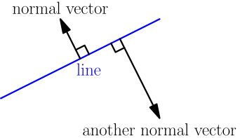
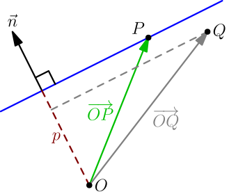

Equation of Line in Normal Form¶
On this page, we'll derive the equation of a line. It will be an equation containing the variables $x$ and $y$ that is true if $(x,y)$ is a point on the line, and false otherwise.
Note that a line is infinitely long. However, when drawing lines, we only draw a finitely long part of the line, because I can't make an image file with infinitely many pixels and attach it to this site. If you want a "finitely long line", it's called a line segment.
A normal vector of a line is a nonzero vector that is perpendicular to the line.

Note that each line has infinitely many different normal vectors.
Consider any line, and let $\vec n$ be one of its normal vectors. Let's draw $\vec n$ such that it aligns with the origin $O=(0,0)$.

We notice that the projection of $\Vec{OP}$ onto $\vec n$ is the same for any point $P$ on the line. We call this projection $p$. In the picture, we have a positive $p$, but it could also be zero for a line going through origin, or negative in case $\vec n$ points toward the origin.
We also notice that for a point $Q$ not on the line, the projection of $\Vec{OQ}$ onto the line will be something else than $p$. In the picture, it's less than $p$, but it would be greater than $p$ if $Q$ was on the other side of the line.
From these observations, we know that the equation of the line can be written as $$ (\text{projection of (vector from $O$ to $(x,y)$) onto $\vec n$}) = p. $$ The vector from $O$ to $(x,y)$ is $x\I + y\J$. Let $a$ and $b$ be the components of $\vec n$; that is, $\vec n = a\I + b\J$. From dot products, we know that the projection used above is $$ \frac{(x\I + y\J) \cdot \vec n}{|\vec n|} =\frac{(x\I + y\J) \cdot (a\I + b\J)}{|\vec n|} =\frac{ax+by}{|\vec n|}. $$ (We can divide by $|\vec n|$ because $\vec n$ is a normal vector, and earlier we said that normal vectors are not zero vectors.) This means that the equation of the line is $$ \frac{ax+by}{|\vec n|} = p, $$ which can be written as $$ ax+by = p|\vec n|, $$ or $$ ax+by\underbrace{{}-p|\vec n|}_{\text{call this $c$}}=0. $$ By letting $c=-p|\vec n|$, we get the following result.
Any line has an equation $ax+by+c=0$, where $a\I + b\J$ is a normal vector of the line.
The above equation is called the normal form of a line equation, because the normal vector appears in it.
Does this go the other way? Is any $ax+by+c=0$ the equation of some line? This is not the case if both $a$ and $b$ are zero, because this corresponds to $\vec n$ being zero vector above; that would mean that the equation is just $c=0$, which is true for all $(x,y)$ points or for no $(x,y)$ points depending on the value of $c$. Hence it's not the equation of any line.
However, if we assume that at least one of $a$ and $b$ is nonzero, then we can choose a line so that $\vec n=a\I + b\J$ is one of its normal vectors, and the line is located so that the projection $p$ above is $-\frac{c}{|\vec n|}$. By the above, its equation will then be $$ ax+by-\underbrace{\left( -\frac{c}{|\vec n|} \right)}_p|\vec n| = 0, $$ which simplifies to $ax+by+c=0$.
If at least one of $a$ and $b$ is nonzero, then $ax+by+c=0$ is the equation of a line, where $a\I + b\J$ is a normal vector of the line.
Examples:
- The equation $3x+4y+5=0$ defines a line. One of its normal vectors is $3\I+4\J$.
- Multiplying the equation of the above example by $2$ on both sides gives $6x+8y+10=0$, so $6\I+8\J$ is also a normal vector of the line. This makes sense, because these normal vectors go in the same direction.
- We can think of $x$ axis as a line whose equation is $y=0$. That can be rewritten as $0x+1y+0=0$, so $0\I+1\J$ is a normal vector of $x$ axis, which makes sense.
- Let's find a line with normal vector $2\I-3\J$ going through point $(4,5)$. The equation of the line is $2x+(-3)y+c=0$, where $c$ is some number. Because the line goes through $(4,5)$, that point must satisfy the equation of the line: $$ 2 \cdot 4 + (-3) \cdot 5 + c = 0 $$ From here we can solve $c=7$, so the equation of the line is $2x-3y+7=0$.
Notice how in the last example, we used two things for finding the equation of the line: the normal vector, and one known point. More generally, to find the equation of a line, you almost always need to use information about what direction the line should go in and where should the line be. In this case, the normal vector gives the direction of the line, and the known point tells where the line should go.